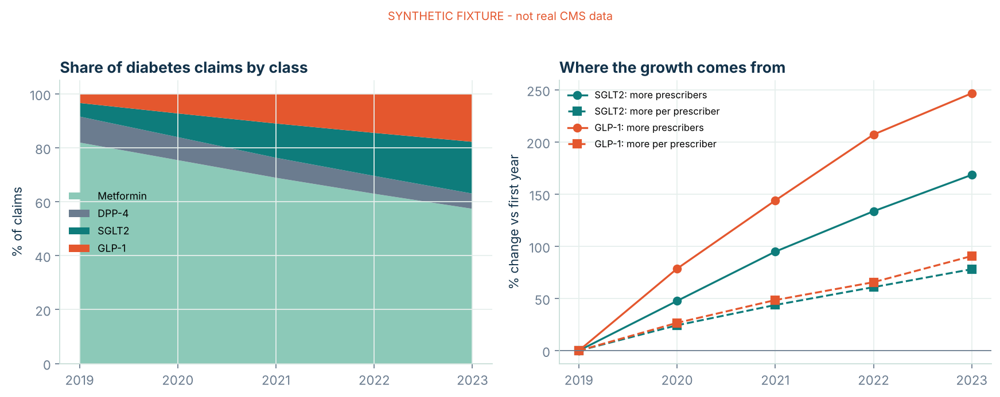
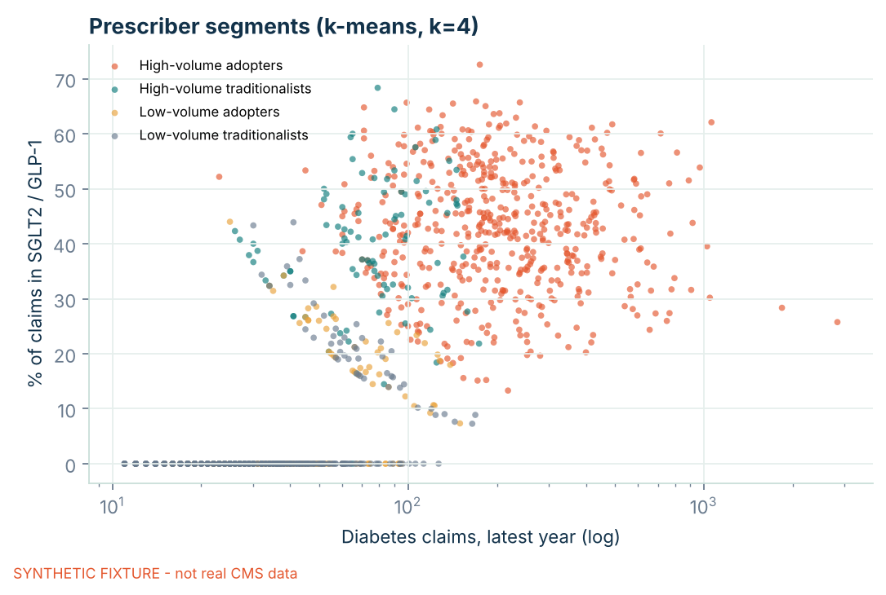

| Segment | Prescribers | Median claims | New-class share | Growth | Recommended action |
|---|---|---|---|---|---|
| High-volume adopters | 515 | 197 | 43% | 7% | Protect: peer-to-peer programmes, outcomes data, first for new indications |
| High-volume traditionalists | 93 | 77 | 40% | 58% | Biggest opportunity: targeted detailing on guideline change and CV/renal outcomes |
| Low-volume adopters | 176 | 36 | 0% | 25% | Low cost to serve: digital/email, samples, let them grow their panel |
| Low-volume traditionalists | 364 | 30 | 0% | -14% | Do not detail in person: newsletter and pharmacy-channel support only |
